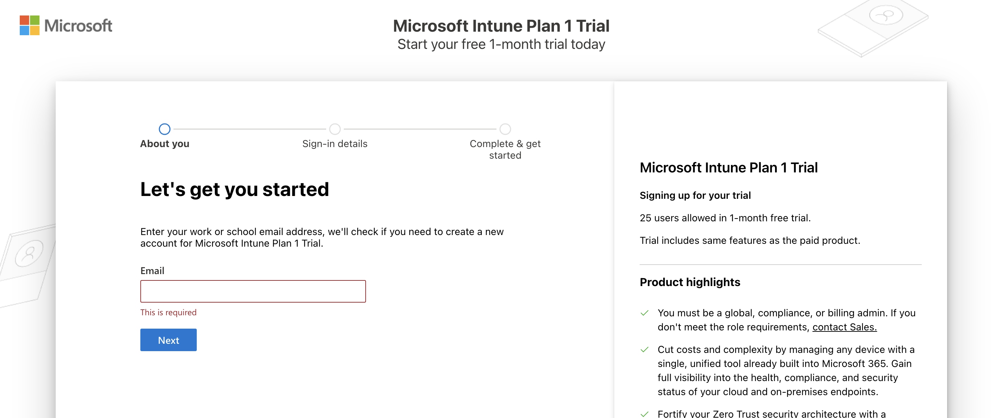
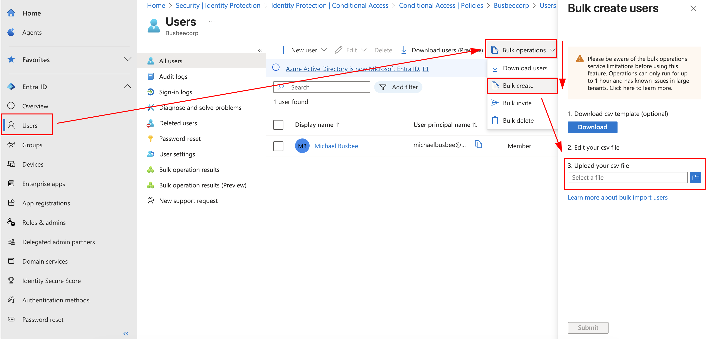
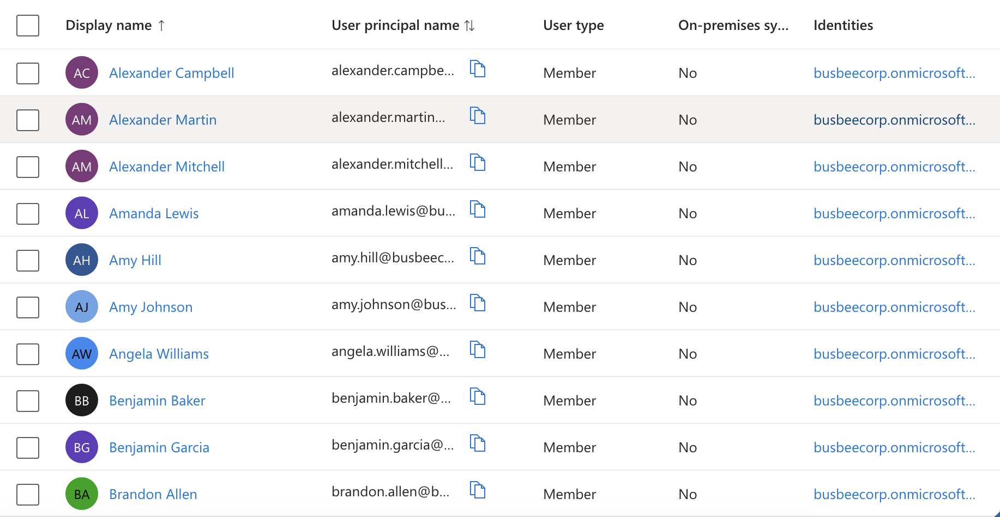
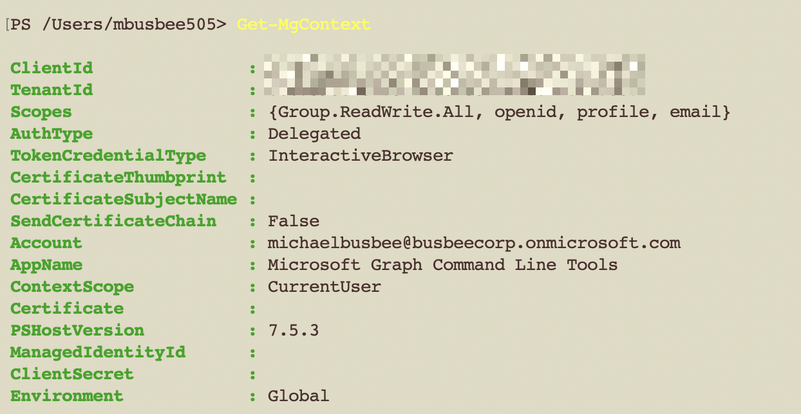
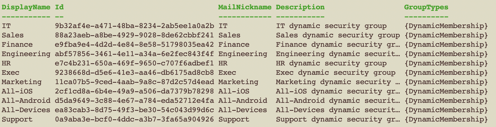
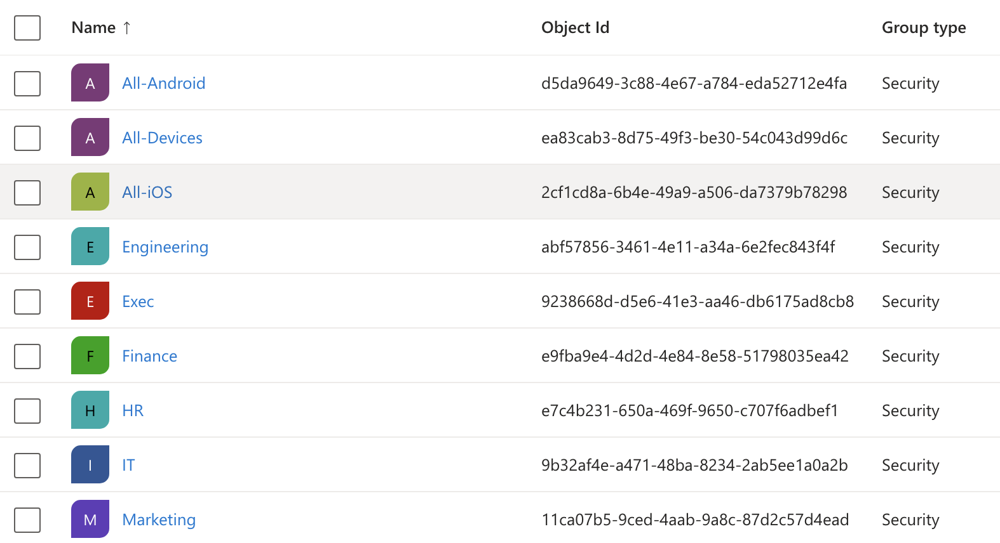
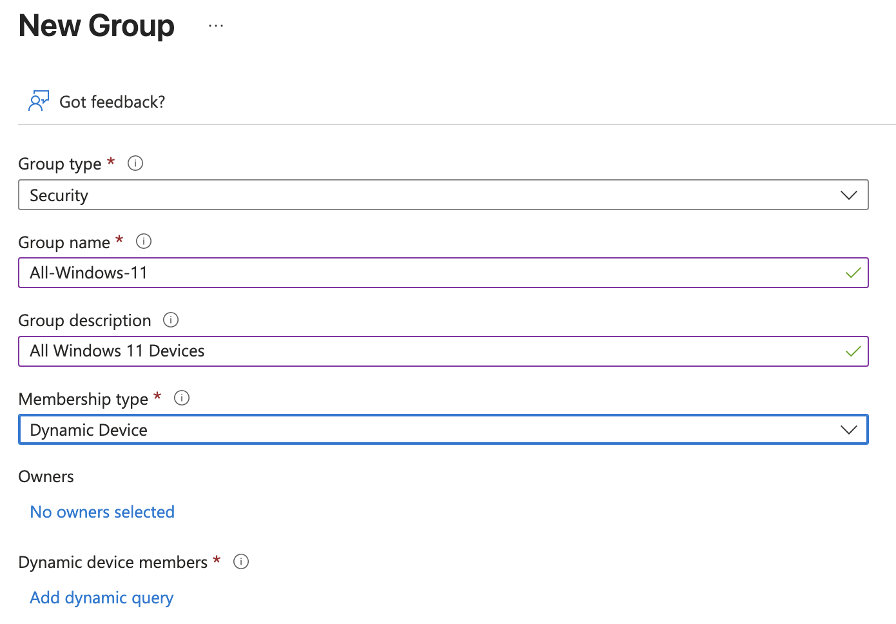
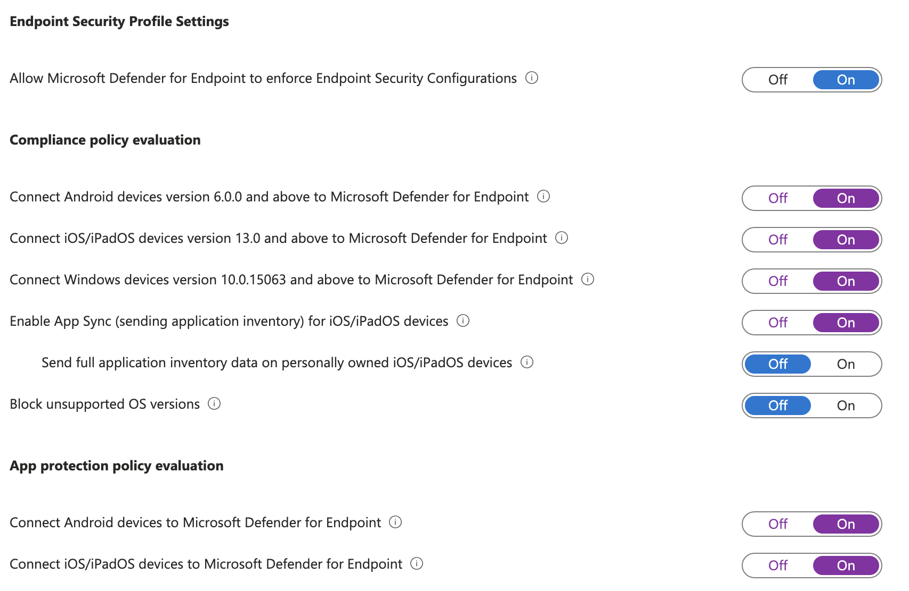

Previous: [[Intune-Lab/0. Project Introduction|0. Project Introduction]]
Signing Up for Intune
First things first, I had to sign up for the Intune Free Trial, provided an email address and a few other pieces of info.
The trial allows for 25 users but we get all the same features as the paid version of the environment.

Nuke The Security Defaults
Next up I needed to turn off the Entra security defaults so theres room for my conditional access policies to take effect without conflict. To do this I went to Entra > Overview > Properties > Manage security defaults and set it to Disabled (not recommended).

When asked for the reason, I selected "My organization plans to use Conditional Access".
Signing Up for Entra ID
You will need to use this page to sign up for Entra ID and use the same Microsoft account as you used for the Intune trial. Once this is complete you will be able to use Entra in your environment.
Before you begin you may need to assign a license to your user. If this happens go to Microsoft 365 Admin Center > Billing > Licenses and ensure there is a license assigned to your user. If not, assign one manually from this page by clicking Microsoft Entra Suite > Users > Assign Licenses and choose yourself.
Next we will move on to adding more users for our organization and ensure they have licenses.
Uploading Corporate Workforce
Every good organization needs at least a few users, so to make things seem more real I'm going to upload to Entra a CSV file of simulated User data that makes up my fake company workforce.
To get to the user upload I went to Entra > Users > Bulk Operations > Bulk Create and selected my file in the search field.

If you need a fresh template for new users you can download one provided by Microsoft here as well.
To see that it worked I refreshed the page and went to the All Users section.

Setting Up Security Groups
With Microsoft Azure you can do most things through the web portal online or using PowerShell. When you want to solve problems at scale or do something in an automated way its sometimes better to use PowerShell. I wanted a way to automate the group creation in this way so I tried with a PowerShell command.
First make sure you have Microsoft Graph installed.
Install-Module Microsoft.Graph -Scope CurrentUser
Then connect to your tenant:
Connect-MgGraph -Scopes "Group.ReadWrite.All" -TenantID "<Your Tenant ID>"
The Tenant ID can be found by going to Entra > Overview

After running this command for the first time like I was, you may have a pop-up browser window asking for permission to connect. Make sure to give it the access so you can continue running commands.
To test that the connection works run
Get-MgContext
It should output some info about your Tenant like below. If this doesn't work you will need to check your connect command again and ensure you are using the right Tenant ID.

Once I confirmed connection I ran the command below which added the following security groups to Entra. Since its a dynamic group, users and devices will be added to them automatically based on their properties.
- Exec
- HR
- Finance
- IT
- Sales
- Marketing
- Eng
- Support
- All-Devices
- All-iOS
- All-Android
# Map each DisplayName to its dynamic rule
$dynamicMap = @{
'Executive' = '(user.jobTitle -contains "Chief")'
'Human Resources' = '(user.department -eq "Human Resources")'
'Finance' = '(user.department -eq "Finance")'
'IT' = '(user.department -eq "IT")'
'Security' = '(user.department -eq "Security")'
'Research' = '(user.department -eq "Research")'
'Sales' = '(user.department -eq "Sales")'
'Marketing'= '(user.department -eq "Marketing")'
'Engineering' = '(user.department -eq "Engineering")'
'Support' = '(user.department -eq "Support")'
'All-Devices' = '(device.deviceId -ne null)' # dynamic **device** group
'All-iOS' = '(device.deviceOSType -contains "iOS")'
'All-Android' = '(device.deviceOSType -contains "Android")'
}
foreach ($kv in $dynamicMap.GetEnumerator()) {
$name = $kv.Key
$rule = $kv.Value
$params = @{
DisplayName = $name
MailNickname = ($name -replace '\s','')
Description = "$name dynamic security group"
SecurityEnabled = $true # keeps it a security group
MailEnabled = $false
GroupTypes = @('DynamicMembership')
MembershipRule = $rule
MembershipRuleProcessingState = 'On'
}
New-MgGroup @params
}

Once I saw the success screen come through I went to Entra > Groups > All Groups and found the groups added via PowerShell.

According to Microsoft, it can take up to 24 hours for these groups to apply to users. While I waited for this to end I moved on to setting up a dynamic device group for Windows 11 devices.

In the Add dynamic query page I added the following settings:

Assigning Entra+Intune Licenses
I discovered in order to get the Automatic Enrollment to work on Intune during the OOBE setup I needed each user to have an Entra and Intune license assigned. Since I had only signed up for the Intune Trial so far, I had to go back and make sure to sign up for an Entra ID Free Trial as well under the same Microsoft account.
The Free Trials for Entra and Intune both came with 25 users each so I decided to cull my workforce down to 25 users (including myself), then apply the licenses to each user. I did not want to apply to all users, just those that are employees of the company. The smartest way to do this seemed to be by creating a dynamic group based on the user's Company Name property and assign licenses to members of that group.
First I needed to set the Company Name property correctly for all 25 of my current users, since I know these are all employees. The following PowerShell commands set the Company Name for all users.
$CompanyName = "BusbeeCorp"
$domain = "@busbeecorp.onmicrosoft.com"
Get-MgUser `
-Filter "endswith(userPrincipalName,'$domain')" `
-ConsistencyLevel eventual `
-All |
ForEach-Object {
Update-MgUser -UserId $_.Id -CompanyName $CompanyName
}
In the real world I would want to make sure data entry for each new user is happening correctly.
With the Company Name set I just needed to create a dynamic group for All-Employees based on the Company Name property BusbeeCorp
$rule = 'user.companyName -eq "BusbeeCorp"'
New-MgGroup -DisplayName "All-Employees" `
-Description "Every Employee of BusbeeCorp" `
-MailEnabled:$false `
-SecurityEnabled:$true `
-MailNickname "all-employees" `
-GroupTypes "DynamicMembership" `
-MembershipRule $rule `
-MembershipRuleProcessingState "On"
I found that to get the Licenses assigned to the All-Employees group I had to first update Microsoft Graph to get a few modules not included by default.The following command will install this and open a new PowerShell session.
Register-PSRepository -Name PSGallery -SourceLocation "https://www.powershellgallery.com/api/v2" -InstallationPolicy Trusted -ErrorAction SilentlyContinue
Install-Module Microsoft.Graph -Scope CurrentUser -Force
pwsh
Once in the new session I ran the commands below to apply the License SKUs to the All-Employees group.
Connect-MgGraph -Scopes "Directory.ReadWrite.All","LicenseAssignment.ReadWrite.All","Group.ReadWrite.All"
$skuIntune = "061f9ace-7d42-4136-88ac-31dc755f143f"
$skuEntraP2 = "f9602137-2203-447b-9fff-41b36e08ce5d"
$groupId = (Get-MgGroup -Filter "displayName eq 'All-Employees'").Id
Set-MgGroupLicense -GroupId $groupId `
-AddLicenses @(@{SkuId=$skuIntune}, @{SkuId=$skuEntraP2}) `
-RemoveLicenses @()
I confirmed this took effect by going to Entra > Billing > Licenses > All Products and saw 25 Assigned licenses for each product.

Signing Up for Defender for Endpoint
First, Go to the sign up page for Microsoft Defender for Endpoint P2 Free Trial and sign up using the same login you used for the rest of the lab. Complete the sign up flow, then go to Microsoft 365 Admin Center > Billing > Licenses page and click Microsoft Defender for Endpoint P2. In this page click Groups > Assign Licenses and assign them to the All-Employees group.
Next we can setup Defender for Endpoint to connect with each of our devices in Intune so we can get visibility over the devices security and compliance status. Defender for Endpoint provides comprehensive protection for endpoint devices to guard users and provide better management capabilities for IT admins.
To configure Defender for Endpoint you must first connect it to the Intune environment. In Intune go to Intune > Endpoint security > Microsoft Defender for Endpoint and set the following setting:
- Allow Microsoft Defender for Endpoint to enforce Endpoint Security Configurations: On
This will let Defender control the configurations within the Intune environment.
You will next need to go to the Defender portal and connect Defender to Intune on the other side. Go to Defender > Settings > Endpoint > Advanced Features > Microsoft Intune Connection and set it to On.
On the Intune side you will need to go to Intune > Tenant Administration > Connectors and tokens > Microsoft Defender for Endpoint and make sure all devices are set to connect to MDE.

These being connected ensures Defender for Endpoint is able to connect to the Intune devices.